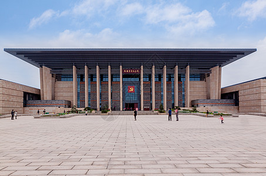
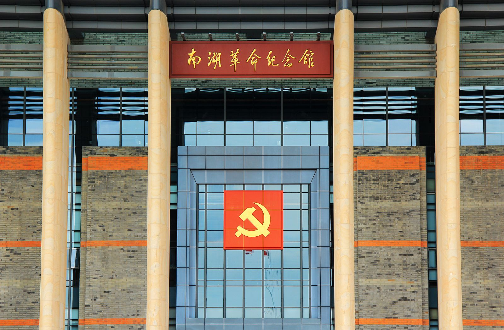

1921 年 7 月，上海法租界望志路 106 号的小楼里，13 位来自各地的代表正在秘密召开中共一大。此时，一位 23 岁的年轻女性始终在门口警惕地张望，她就是会议组织者李达的妻子 —— 王会悟，也是这场 “开天辟地” 会议的 “幕后守护者”。
王会悟出生于浙江桐乡一个知识分子家庭，早年接受新思想熏陶，1920 年加入上海共产主义小组，成为中国早期共产主义运动中少有的女性参与者。1921 年一大召开前，李达因担心会议安全，让王会悟负责 “外围警戒”。7 月 23 日会议开始后，王会悟每天提前到达会场，检查周边环境，以 “李达夫人” 的身份接待代表，同时留意是否有可疑人员。7 月 30 日晚，会议进行到第六次时，一名陌生男子突然闯入会场，声称 “找社联的王主席”，王会悟瞬间察觉异常，立即示意代表们撤离。几分钟后，法租界巡捕带着警犬赶到，会场已空无一人 —— 正是王会悟的警惕，让一大代表躲过了第一次危机。
会议被迫中断后，代表们紧急商议下一步计划。有人提议转移到杭州，但王会悟认为杭州过于繁华，容易暴露；她想到自己的家乡嘉兴南湖，那里湖面开阔、船只众多，且她熟悉当地情况，便于隐蔽。“南湖的游船很安全，白天游人多，我们租一艘大船，以‘游湖’为名义开会，不会引起怀疑。” 王会悟的提议得到一致同意。


7 月 31 日清晨，王会悟提前从上海赶到嘉兴，先到南湖边的 “鸳湖旅馆” 预订房间，作为代表们的临时休息点，再前往码头租船。她特意挑选了一艘宽敞的 “单夹弄” 游船（即船中间有一条走廊，前后舱隔开，便于议事），并提前准备了麻将牌 —— 一旦遇到巡查，代表们可以装作 “打麻将娱乐”。当天上午 10 点左右，毛泽东、董必武、李达等代表分批抵达南湖，登上游船。王会悟则坐在船头，以 “摇橹” 为掩护，留意周边船只动向，同时让船家准备了午饭，确保会议不受干扰。
从上午到下午，代表们在船舱内激烈讨论，通过了党的第一个纲领 —— 明确 “党的名称为中国共产党”“党的奋斗目标是推翻资产阶级政权”，选举产生了中央局领导机构。下午 3 点左右，远处传来一阵汽笛声，一艘巡逻艇向游船靠近，王会悟立即示意代表们收起文件、摆出麻将牌。巡逻艇上的警察看到船上众人 “打牌娱乐”，并未细查，很快离开。一场可能危及党的成立的危机，再次被王会悟化解。
当天傍晚，中共一大在南湖游船上顺利闭幕。代表们悄悄离船，各自返回各地，中国共产党的历史从此翻开新的一页。而王会悟始终没有进入船舱参与讨论，她的任务是 “守好这盏革命的灯”，确保会议安全。事后有人问她：“你不怕吗？万一被抓了怎么办？” 王会悟回答：“我相信我们做的是对的事，是为了让老百姓过上好日子，就算有风险，也值得。
此后，王会悟继续投身革命事业，参与创办《妇女声》杂志，推动妇女解放运动；抗战时期，她在重庆、上海等地从事抗日救亡工作，始终坚守 “为人民服务” 的初心。1993 年，王会悟在北京逝世，享年 95 岁。她生前多次回到嘉兴南湖，站在红船边对后人说：“这艘船很小，但它载着中国革命的希望；当年我们人少，但我们相信马克思主义的真理，相信只要跟着党，中国就会有希望。
如今，在南湖革命纪念馆的 “中共一大历史展区”，陈列着王会悟当年使用过的手提箱、麻将牌复制品，以及她晚年回忆一大召开过程的录音资料。展墙上，一张王会悟与红船的合影格外醒目 —— 照片中的她白发苍苍，却依然挺直脊背，眼神坚定地望着红船，仿佛仍在守护着那段改变中国命运的历史。
这则故事深刻印证了马克思主义 “人民群众是历史的创造者” 原理。王会悟作为一名普通的革命参与者，没有身居高位，却以自己的智慧和勇气，在关键时刻保护了党的成立会议，成为 “中国革命源头” 的重要守护者。她的经历证明，革命的胜利不仅需要领导人的正确决策，更需要无数普通群众的参与和奉献 —— 正是这些 “平凡人” 的不平凡行动，汇聚成了推动中国社会发展的巨大力量。同时，王会悟对 “马克思主义真理的信仰”，也体现了 “先进思想对个人行动的引领作用”，她之所以敢于冒着生命危险守护会议，正是因为坚信马克思主义能够救中国，坚信中国共产党能够带领人民走向幸福，这正是马克思主义 “理想信念是革命行动的精神动力” 的生动体现。 返回